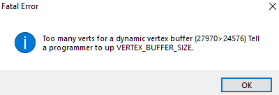

When attempting to change a prop_static to use props_am\am_server.mdl, Hammer crashes with the following error dialog:
[attach=5727,none,400][/attach]
Not sure what caused this to suddenly happen, but the model loads fine into the in-hammer viewer and clearly works both ingame and back when it was being added to AM and UC. I’m also pretty sure that the model has far fewer than 27960 verts, so maybe it’s a format issue?
Other variations of the server model work fine, so it’s not a showstopper for what I’m working on, but thought you ought to know.
